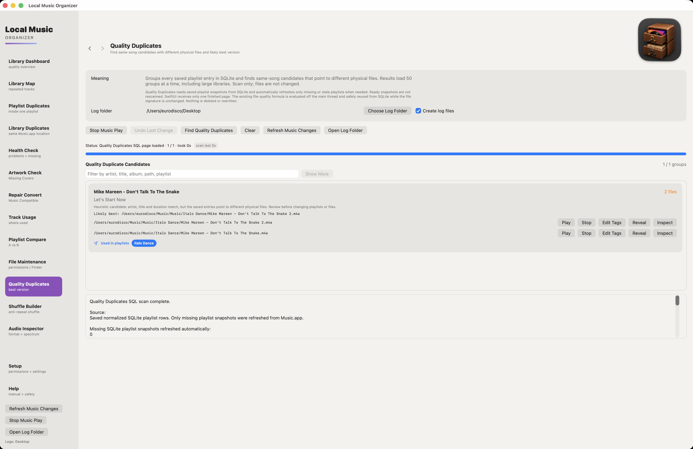

How to find duplicate songs in Music.app on Mac
A repeated song in a playlist is not necessarily a duplicate audio file. Music.app can also contain two library records for the same file, or separate files with different versions of a recording. Local Music Organizer has a different tool for each case.
Choose the right duplicate scan
Playlist Duplicates finds repeated entries inside one selected playlist. Run Scan Playlist Duplicates and review which occurrence should remain. Removing an occurrence here leaves both the Music.app library record and the audio file in place.
Library Duplicates looks for duplicate Music.app library records. This includes records pointing to the same local file and other verified duplicate patterns. It requires a complete Full Library Records index; a partial index is not enough for this scan. Scan Library Duplicates is read-only. If you later remove selected duplicate records, their physical audio files are not deleted.
Quality Duplicates compares different physical versions of what appears to be the same recording using saved playlist data. Run Find Quality Duplicates to see candidate groups. The Likely Best label is a technical ranking, not a judgment about mastering or sound quality.
What to check before removing anything
Start with Build / Refresh Library Index in Library Dashboard. Include playlist usage when you need to see where records are used. Then run the scan that matches the problem. Compare the file paths, playlist relationships and technical details. Where two separate recordings are involved, you can open A/B Duplicate Compare and listen to the same passage from each file.
Keep in mind what each action changes. Remove Selected Playlist Entries removes playlist occurrences. Remove Selected Duplicate Records removes Music.app records, not their files. In Quality Duplicates, Remove From Playlist changes a playlist entry, whereas Move to Trash moves the chosen physical file to macOS Trash and does not automatically clean up Music.app references. Review those relationships first.
When two versions are worth keeping
A CD release, remaster, live recording or vinyl transfer may be intentionally stored as a separate file. Higher bitrate or sample rate alone does not establish which version sounds better. Compare the recordings before treating either one as disposable.
The Quality Duplicates walkthrough, feature overview and Support documentation provide more context about the individual tools.

Quality Duplicates shows separate physical versions and their technical details for review.